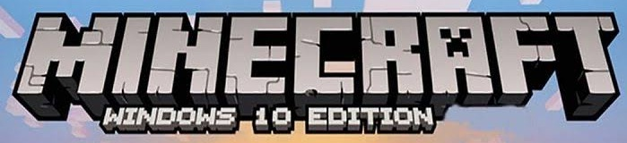
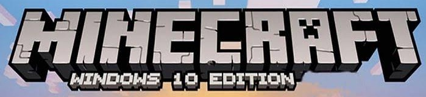

¿QUE ES MINECRAFT?
Minecraft es un videojuego de mundo abierto donde la exploración y las construcciones son fundamentales.Nos permite desarrollar nuestros propios universos fantásticos y artísticos, mediante la colocación ydestrucción de bloques. Al ser un videojuego de mundo abierto, no tiene una misión concreta (salvo alguno de sus modos de juego) y consiste en la construcción libre mediante el uso de cubos con texturas tridimensionales. Los bloques representan distintos elementos de la naturaleza y el jugador puede desplazarse por su entorno y modificarlo mediante la creación, recolección y transporte de esos bloques. Nunca se generan dos mundos iguales, pues se crean mediante el uso de algoritm>
os.
MODOS DEL JUEGO
Está planeado que existan multiples modos de juego, y según esta información, se pueden anticipar los siguientes:
- Supervivencia: En este modo los jugadores deben conseguir todos los materiales que quieran utilizar en la construcción, o en la manufacturación. Incluye la barra de salud y daño, e incluye el inventario.
- Creativo: La mayoría de los bloques que se pueden utilizar para la construcción se tienen desde el comienzo y en cantidades infinitas. El personaje no puede morir en el juego y hay criaturas hostiles. El único objetivo es la construcción, y sólo se puede jugar en la versión clásica de Minecraft.
- Aventura: Este modo de juego fue añadido en la final 1.3.1 En este modo no puedes romper ni colocar ningún tipo de bloque, solo puedes usar palancas, placas de presión, botones, puertas de madera, tambien podras abrir cofres, hornos y dispensadores. puedes manejar armas y herramientas pero solo para atacar mobs. puedes ponerte armadura.
Este modo se suele usar en mapas de aventura creados por terceros.
- Extremo: En este modo, que juega en la misma forma que el modo de supervivencia, el nivel de dificultad está permanentemente en "extremo" y el mapa debe ser eliminado después de la muerte del jugador. El modo extremo fue presentado como parte de la beta 1.9 de pre-lanzamiento y se puede jugar en la versión completa de Minecraft.
Técnicamente, el extremo es un modificador de un modo de juego, en lugar de un modo nuevo. Sin embargo, sin hacer hakeo, cualquier puede proponerse "la supervivencia extrema" (jugando supervivencia y eligiendo eliminar el mapa si llega a morir).
- Espectador: En este modo de juego, como su nombre dice, eres un espectador en el juego, tu skin es invisible para los jugadores, otros espectadores ven tu cara, puedes volar, y atravesar bloques, también, no puedes interactuar con objetos ni moverlos, como en cofres; a diferencia del creativo, no se bajá con el doble espacio solo con shift.
También, con este modo de juego, se puede ver lo que los mobs ven
CRIATURAS
El juego también incluye animales, denominados en su conjunto como criaturas (mobs en inglés), estas criaturas pueden ser pacíficas, como cerdos, caballos, gallinas, ovejas, etcétera,
de las cuales el jugador puede obtener alimento y recursos fácilmente, pero también aparecen en el juego criaturas hostiles, como zombis, esqueletos, etcétera. Estas criaturas únicamente aparecen en la noche o en zonas oscuras a excepción del creeper. Entre ellas se encuentran a las criaturas únicas del juego, como los creepers, que explotan al estar cerca del jugador, criaturas neutrales como los enderman, que pueden recolectar bloques y tele transportarse e incluso criaturas jefe (boss en inglés) como el wither. También hay animales domesticables como el lobo y criaturas que se pueden invocar como el gólem de hierro y gólem de nieve.
¿POR QUE DEBERIAS JUGAR MINECRAFT?
Muchos personas deberian jugarlo porque:
- Ayuda a que la creatividad de los niños crezca, dandoles libertad completa para construir lo que sus imaginaciones decidan.
- Cada partida es diferente, por lo que nunca podras aburrirte y tendras unas experiencias geniales.
- Puedes crear partidas online y juntarte con todos tus amigos.
- Te puede sorpender la cantidad de animales y criaturas que hay.
- Puedes contruir practicvamente todo.
y tu... ¿Que esperas para jugar Minecraft?